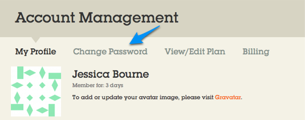
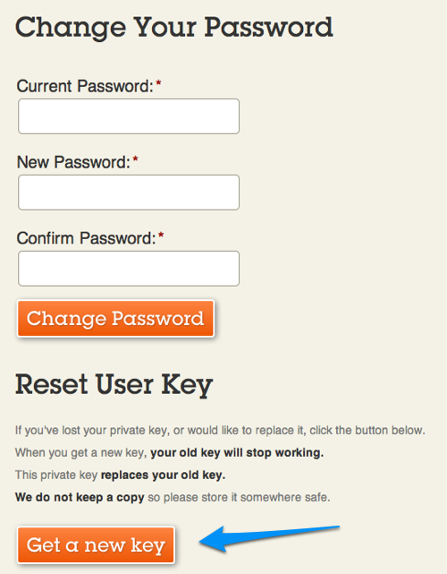
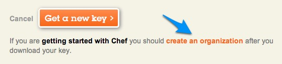
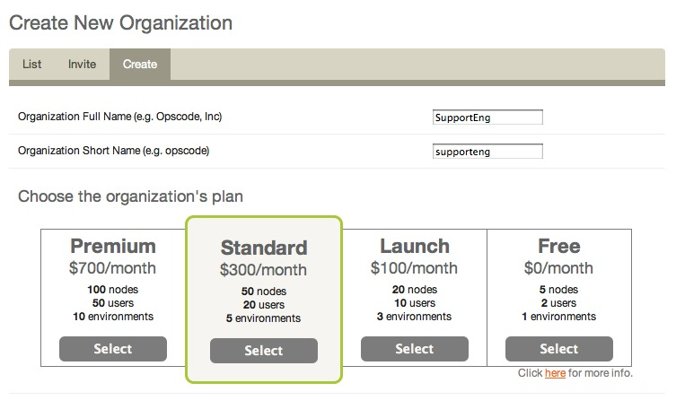

This page is to provide addition details on using Hosted Chef to setup a user and organization
Signup and Account ValidationHead over to the Hosted Chef Sign Up page to create your account. You will get an email validation shortly after you sign up.
Each of these steps are detailed below. Place all of the files you download in this section in the same directory. Download Your User KeyLogin to the Management Console and navigate to your user profile page:
Follow the link to get a new User Key:  Download your new User Key:  Create an OrganizationLogin to the Management Console and navigate to the organizations page:
Click on the 'create' sub-tab:  Enter a name for the organization and select a service plan:  Download Your Organization Key and Knife Configuration FileFor the organization you would like to manage, download your Organization Key and your Knife Configuration File:
Opscode does not store copies of these keys! Keep them safe!
|


|
|